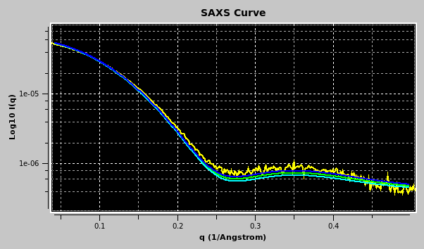
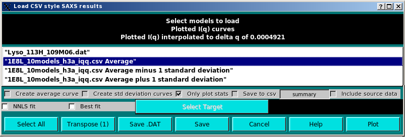
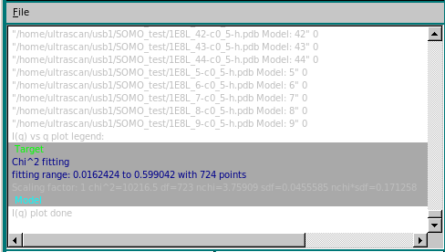
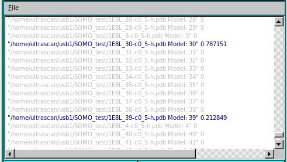
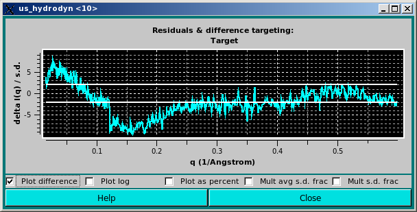
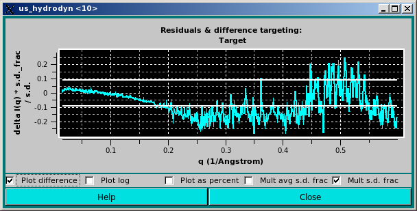
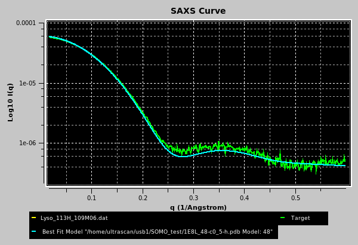
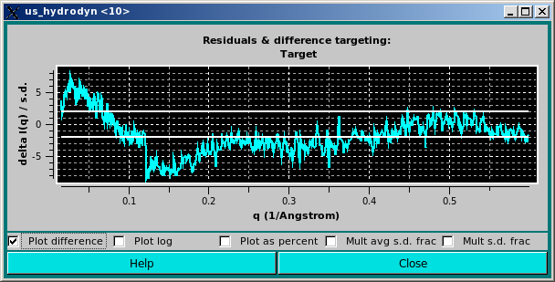
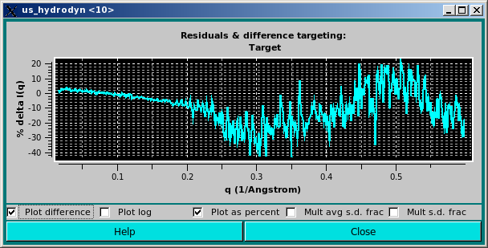

| |
Manual |

Previously computed csv-style I(q) vs. q files, such as those generated using the US-SOMO Batch Mode, can also be uploaded in the SOMO SAXS/SANS graphics window. In this case, a new window will open listing all the individual curves present in the csv file, plus all other files already uploaded into the graphics window.
Individual data can be selected/deselected by clicking on them, or they can all be selected/deselected by pressing the Select All button. Several operations can then be performed before returning to the graphics window. In the example shown below, the first ten datasets were selected and the Create average curve, Create std deviation curves, Only plot stats, and Save to csv checkboxes were ticked. This will create an average curve from the selected dataset, plus +1 SD and -1 SD curves. Only the average and SD curves will be plotted (because the Only plot stats checkbox was selected). Furthermore, the resulting average and SD curves will be saved in another csv file, whose filename can be entered in the field next to the Save to csv checkbox. The original source data can be also saved in the new csv file by ticking the Include source data checkbox.

Pressing the Plot button will bring up a pop-up window asking to confirm/change/deselect a target curve upon which the new data to be plotted can be rescaled:

After the appropriate selection, pressing "OK" will update the graphics window, and at the same time also the progress window in the bottom-left corner of the panel:


For instance, the selected data, which are stored in rows, can be transposed into columns by pressing the Transpose button (the number in parentheses in the button label will show how many datasets are going to be transposed). This will bring up a save window where a path and a filename can be chosen. The transposed file will be saved in csv format.
Alternatively, a Crysol-compatible file can be saved by pressing the Save .DAT button, bringing up again a save window where a path and a filename can be chosen. Currently (March 2012) only one dataset at the time can be saved in .DAT format (2 columns), but we plan to add the capability of also saving a third column containing the SD data for averaged datasets.
Pressing the Save button will instead save the selected dataset(s) into another csv file maintaining the rows storage format.
Pressing Cancel will close this window.
More operations can be performed on multiple I(q) vs. q files within this module.
A non-negative least squares (NNLS) procedure can be utilized to find the best combination of model curves matching an experimental dataset. This operation is performed by first selecting the experimental dataset by clicking on it, and then pressing the Select Target button (available only when a single dataset is selected). The chosen dataset name will then appear in the field next to the Select Target button. If a single (experimental) data file was already loaded into the graphics window, it will be automatically chosen as the target dataset (but it could be changed as described above). Next, the datasets on which the NNLS is to be performed are selected (efficiently by first pressing the Select All button and then de-selecting the unwanted datasets by single-clicking on their names):

Pressing the Plot button will then launch the NNLS operation, at the end of which the program will return to the main US-SOMO SAXS/SANS panel. This will bring up a pop-up window asking to confirm/change/deselect a target curve upon which the new data to be plotted can be rescaled:

After the appropriate selection, pressing "OK" will update the graphics window, and at the same time also the progress window in the bottom-left corner of the panel:

 
In the example above, two models, #30 & #39, contributed respectively by 79% and 21% to the final curve. The goodness of the fit is also evaluated by checking the residuals window:


Likewise, the best mathing curve from an ensemble can be found by selecting the Best fit checkbox, and proceed as described above for the NNLS fit. At the end of the process, the program will return to the main US-SOMO SAXS/SANS panel, bringing up again a pop-up window asking to confirm/change/deselect a target curve upon which the new data to be plotted can be rescaled. After the appropriate selection, pressing "OK" will update the graphics window, and at the same time also the progress window in the bottom-left corner of the panel:


In the example shown above, model #48 was found to have the best fit with the target experimental data. The curve is shown in cyan on the graphics window, and the same color is used in the progress window to indicate it.
As for the NNLS fit, the goodness of the fit is also evaluated by checking the residuals window:


This document is part of the UltraScan Software Documentation
distribution.
Copyright © notice.
The latest version of this document can always be found at:
http://www.ultrascan.uthscsa.edu
Last modified on March 16, 2012